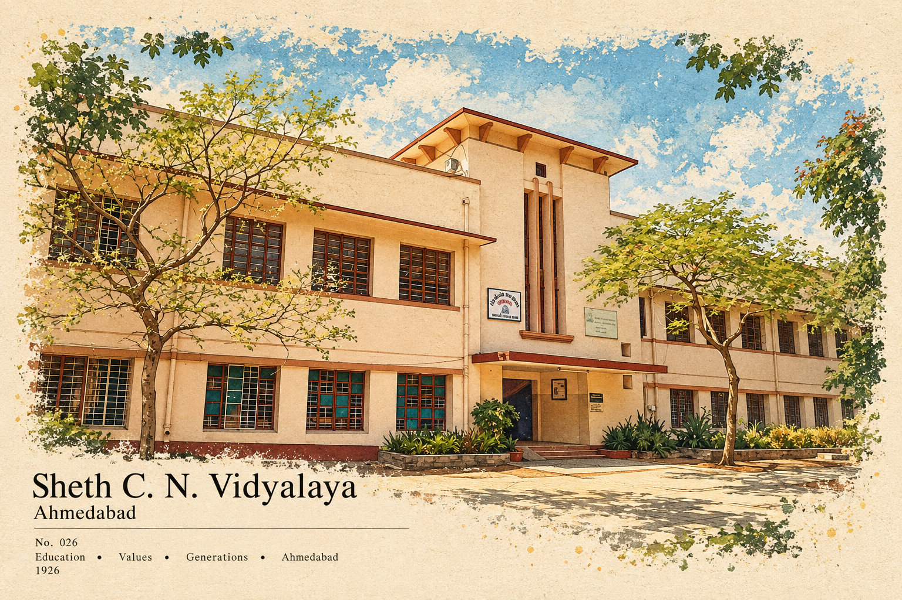
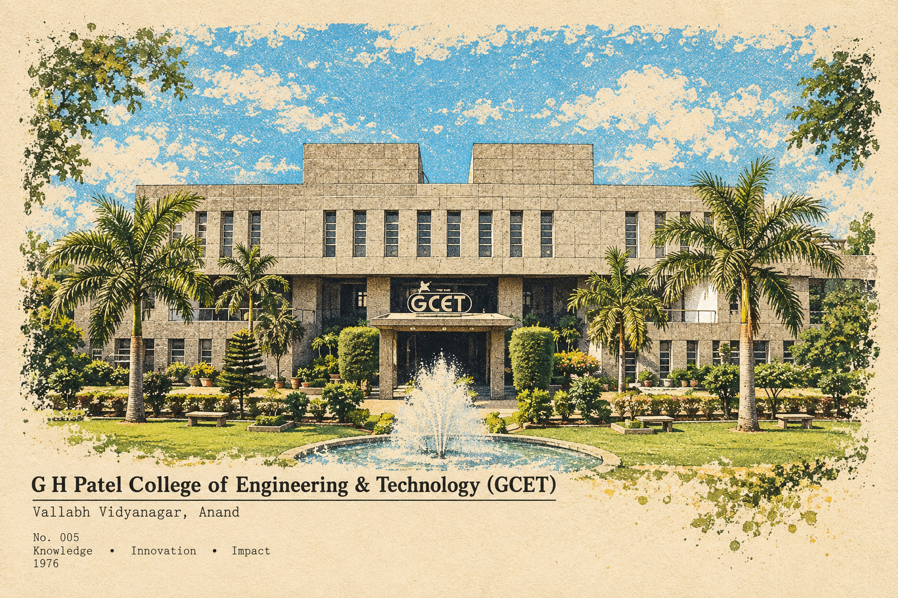
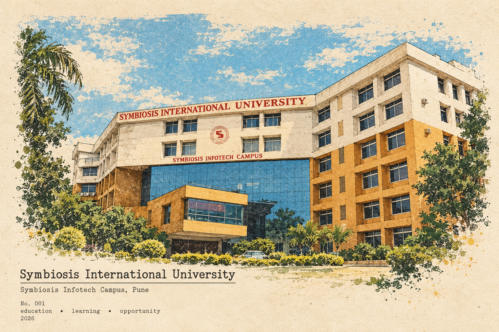

01SCHOOL YEARS / AHMEDABAD

THE BEGINNINGSheth C. N.
Sheth C. N.
Vidyalaya
Secondary and higher secondary school. The place where learning widely became a habit.
HELLO, I'M KATHAN RAJ.
Product manager by practice. Engineer by training. Curious about what AI makes possible.
FOLLOW THE THREAD ↘I work where product decisions meet complicated systems: APIs, data quality, operations and analytics. The useful part is rarely one feature. It is how the pieces work together for people.
pull the thread ↘Corporate clients use different accounting, expense and invoice systems. The exchange gives those systems a consistent way to connect with Amex capabilities.
PRODUCT FOCUS · CONNECTIVITY AND DELIVERY ACROSS TEAMSThere was no shared issue-management framework. I helped build one, then used root-cause analysis and repeatable response to stop the same problems returning. I also worked on data profiling and checks across 70K+ files.
Group similar issues, identify the root cause, and make the next response consistent across teams.
*50–60% reduction over one year. Figures from Kathan's work history. The case files show illustrative signals, not company records.
A marketplace price changes. First the system flags the product; in a later phase it suggests a competitive price for a pricing manager to review and approve.
The first view compares a product with its marketplace reference.
I combined problem definition and delivery of a Python-based analytics solution.
+40% anomaly detection−80% manual effortI read, test, and build with AI. An engineering foundation and an MBA help me ask what a system should do before choosing how to build it.
Exploring how connected information can improve retrieval and context in AI systems.
Independent explorations, separate from employer work. The dashboard is a private AI-assisted build taken from architecture through development.
School made me curious. Computer engineering taught me to understand systems. An MBA in Operations added the people and process lens.

Secondary and higher secondary school. The place where learning widely became a habit.

B.E. in Computer Engineering. I became more interested in how systems fit together than in any one screen.

MBA in Operations at the Symbiosis Infotech Campus. I added business, delivery and people to the technical lens.
Campus postcard artwork supplied by Kathan. The illustrated buildings are visual memories, not documentary photographs.
Each role widened the view: from marketplace signals, to dependable data operations, to the connections that carry information between systems.
Senior Consultant, Analytics. I worked on Walmart Canada pricing, turning marketplace changes into signals a pricing manager could act on.
Associate, Product Management. I helped establish issue-management and data-quality practices across complex operations.
Senior Associate, Product Management. ERP connections, commercial APIs and the foundations that make information more useful.
A product lens, systems fluency and enough hands-on building to ask better questions. These are the capabilities I use together, not a list of software logos.
Product vision and roadmaps · requirements and user stories · backlog priorities · Agile delivery · stakeholder alignment
SEE IT IN THE EXCHANGE ↗Enterprise APIs · ERP ecosystems · partner integrations · transaction flows · interoperability and connection lifecycle
FOLLOW THE DATA FLOW ↗Data quality and governance · metadata and lineage · root-cause analysis · Python and SQL · Tableau, Power BI and Looker
OPEN THE CASE FILES ↗Hands-on experiments with RAG, AI agents and LangChain/LangGraph; cloud and data tools including AWS, GCP and Databricks.
EXPLORE THE EXPERIMENTS ↗Competitions and recognition have been a useful way to test ideas with people outside my day-to-day work.
Awarded for placing in the top 1% in 12th standard.
An early test of problem-solving in a competitive setting.
Gap analysis and process work improved equipment efficiency by 20%.
Campus winner in the supply-chain case competition.
Recognized in the operations strategy competition.
Finalist at the GCS India level in both years.
Product, process, data and AI: four formal stops that sit alongside learning by building.
Agent concepts, tools and workflows; part of my ongoing hands-on AI exploration.
ALSO IN THE TOOLKIT / INTERNAL TRAININGPython, R, SQL, SPSS, Hive/HQL, Databricks and GCP · Sep 2020–Feb 2021
The same curiosity has a lot more places to go.
I found fitness in college, then a knee injury in 2020 interrupted it. Coming back made movement more personal: running, dance, yoga, boxing, pickleball and badminton. Tennis is the new challenge. Finishing the Vedanta Delhi Half Marathon is a milestone I carry with me.
Living away from home made me value it differently. Food documentaries drew me into where dishes come from and why they matter. Gujarat's street food, Navratri and Uttarayan carry that feeling home.
A crisp street-food favourite, especially when the city is celebrating.
One Piece is still my favourite. I connect with Luffy's joy and freedom, and sometimes Zoro's serious side. I also love the energy of Demon Slayer's animation and the strange humour of American cartoons. These three new characters carry those different moods into my own little story.
THREE ORIGINAL CHARACTERS · THREE WAYS TO KEEP MOVING
I read, follow new technology and keep exploring how ideas connect. My final-year engineering project even brought food and code together: a recipe recommender built in Python with K-means.
For product conversations, ideas, or a good question: get in touch.